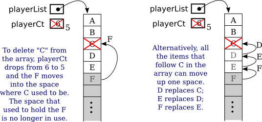

Array Processing
Most examples of array processing that we have looked at have actually been fairly straightforward: processing the elements of the array in order from beginning to end, or random access to an arbitrary element of the array. In this section and later in the chapter, you'll see some of the more interesting things that you can do with arrays.
Some Processing Examples
To begin, here's an example to remind you to be careful about avoiding array indices outside the legal range. Suppose that lines is an array of type String[], and we want to know whether lines contains any duplicate elements in consecutive locations. That is, we want to know whether lines[i].equals(lines[i+1]) for any index i. Here is a failed attempt to check that condition:
boolean dupp = false; // Assume there are no duplicates
for ( int i = 0; i < list.length; i++ ) {
if ( lines[i].equals(lines[i+1]) ) { // THERE IS AN ERROR HERE!
dupp = true; // we have found a duplicate!
break;
}
}This for loop looks like many others that we have written, so what's the problem? The error occurs when i takes on its final value in the loop, when i is equal to lines.length-1. In that case, i+1 is equal to lines.length. But the last element in the array has index lines.length-1, so lines.length is not a legal index. This means that the reference to lines[i+1] causes an ArrayIndexOutOfBoundsException. This is easy to fix; we just need to stop the loop before i+1 goes out of range:
boolean dupp = false; // Assume there are no duplicates
for ( int i = 0; i < list.length - 1 ; i++ ) {
if ( lines[i].equals(lines[i+1]) ) {
dupp = true; // we have found a duplicate!
break;
}
}This type of error can be even more insidious when working with partially full arrays (see Subsection 3.8.4), where usually only part of the array is in use, and a counter is used to keep track of how many spaces in the array are used. With a partially full array, the problem is not looking beyond the end of the array, but looking beyond the part of the array that is in use. When your program tries to look beyond the end of an array, at least the program will crash to let you know that there is a problem. With a partially full array, the problem can go undetected.
For the next example, let's continue with partially full arrays. We have seen how to add an item to a partially full array, but suppose that we also want to be able to remove items? Suppose that you write a game program, and that players can join the game and leave the game as it progresses. As a good object-oriented programmer, you probably have a class named Player to represent the individual players in the game. A list of all players who are currently in the game could be stored in an array, playerList, of type Player[]. Since the number of players can change, you will follow the partially full array pattern, and you will need a variable, playerCt, to record the number of players currently in the game. Assuming that there will never be more than 10 players in the game, you could declare the variables as:
Player[] playerList = new Player[10]; // Up to 10 players.
int playerCt = 0; // At the start, there are no players.After some players have joined the game, playerCt will be greater than 0, and the player objects representing the players will be stored in the array elements playerList[0], playerList[1], ..., playerList[playerCt-1]. Note that the array element playerList[playerCt] is not in use: Besides being the number of items in the array, playerCt is also the index of the next open spot in the array. The procedure for adding a new player, newPlayer, to the game is simple:
playerList[playerCt] = newPlayer; // Put new player in next
// available spot.
playerCt++; // And increment playerCt to count the new player.But deleting a player from the game is a little harder, since you don't want to leave a "hole" in the array where the deleted player used to be. Suppose you want to delete the player at index k in playerList. The number of players goes down by one, so one fewer space is used in the array. If you are not worried about keeping the players in any particular order, then one way to delete player number k is to move the player from the last occupied position in the array into position k and then to decrement the value of playerCt:
playerList[k] = playerList[playerCt - 1];
playerCt--;The player previously in position k has been replaced and is no longer in the array, so we have deleted that player from the list. The player previously in position playerCt - 1 is now in the array twice. But it's only in the occupied or valid part of the array once, since playerCt has decreased by one. Remember that every element of the array has to hold some value, but only the values in positions 0 through playerCt - 1 will be looked at or processed in any way. You can set playerList[playerCt] = null, which could free up the deleted Player object for garbage collection, but that is not necessary to correctly delete the player from the list of (active) players. (By the way, you should think about what happens if the player that is being deleted is in the last position in the list. The code does still work in this case. What exactly happens?)
Suppose that when deleting the player in position k, you'd like to keep the remaining players in the same order. (Maybe because they take turns in the order in which they are stored in the array.) To do this, all the players in positions k+1 and following must move up one position in the array. Player k+1 replaces player k, who is out of the game. Player k+2 fills the spot left open when player k+1 is moved. And so on. The code for this is
for (int i = k+1; i < playerCt; i++) {
playerList[i-1] = playerList[i];
}
playerCt--;Here is an illustration of the two ways of deleting an item from a partially full array. Here, player "C" is being deleted:

This leaves open the question of what happens when a partially full array becomes full, but you still want to add more items to it? We can't change the size of the array—but we can make a new, bigger array and copy the data from the old array into the new array. But what does it mean to copy an array in the first place?
Suppose that A and B are array variables, with the same base type, and that A already refers to an array. Suppose that we want B to refer to a copy of A. The first thing to note is that the assignment statement
B = A;does not make a copy of A. Arrays are objects, and an array variable can only hold a pointer to an array. The assignment statement copies the pointer from A into B, and the result is that A and B now point to the same array. For example, A[0] and B[0] are just different names for exactly the same array element. To make B refer to a copy of A, we need to make an entirely new array and copy all the items from A into B. Let's say that A and B are of type double[]. Then to make a copy of A, we can say
double[] B;
B = new double[A.length]; // Make a new array with the same length as A.
for ( int i = 0; i < A.length; i++ ) {
B[i] = A[i];
}To solve the problem of adding to a partially full array that has become full, we just need to make a new array that is bigger than the existing array. The usual choice is to make a new array twice as big as the old. We need to meet one more requirement: At the end, the variable that referred to the old array must now point to the new array. That variable is what gives us access to the data, and in the end, the data is in the new array. Fortunately, a simple assignment statement will make the variable point to the correct array. Let's suppose that we are using playerList and playerCt to store the players in a game, as in the example above, and we want to add newPlayer to the game. Here is how we can do that even if the playerList array is full:
if ( playerCt == playerList.length ) {
// The number of players is already equal to the size of the array.
// The array is full. Make a new array that has more space.
Player[] temp; // A variable to point to the new array.
temp = new Player[ 2*playerList.length ]; // Twice as big as the old array.
for ( int i = 0; i < playerList.length; i++ ) {
temp[i] = playerList[i]; // Copy item from old array into new array.
}
playerList = temp; // playerList now points to the new, bigger array.
}
// At this point, we know that there is room in the array for newPlayer.
playerList[playerCt] = newPlayer;
playerCt++;
After the new array has been created, there is no longer any variable that points to the old array, so it will be garbage collected.
Some Standard Array Methods
Copying an array seems like such a common method that you might expect Java to have a built-in method already defined to do it. In fact, Java comes with several standard array-processing methods. The methods are defined as static methods in a class named Arrays, which is in the package java.util. For example, for any array, list,
Arrays.copyOf( list, lengthOfCopy )is a function that returns a new array whose length is given by lengthOfCopy, containing items copied from list. If lengthOfCopy is greater than list.length, then extra spaces in the new array will have their default value (zero for numeric arrays, null for object arrays, and so on). If lengthOfCopy is less than or equal to list.length, then only as many items are copied from list as will fit in the new array. So if A is any array, then
B = Arrays.copyOf( A, A.length );sets B to refer to an exact copy of A, and
playerList = Arrays.copyOf( playerList, 2*playerList.length );could be used to double the amount of space available in a partially full array with just one line of code. We can also use Arrays.copyOf to decrease the size of a partially full array. We might want to do that to avoid having a lot of excess, unused spaces. To implement this idea, the code for deleting player number k from the list of players might become
playerList[k] = playerList[playerCt-1];
playerCt--;
if ( playerCt < playerList.length/4 ) {
// More than 3/4 of the spaces are empty. Cut the array size in half.
playerList = Arrays.copyOf( playerList, playerList.length/2 );
}I should mention that class Arrays actually contains a bunch of copyOf methods, one for each of the primitive types and one for objects. I should also note that when an array of objects is copied, it is only pointers to objects that are copied into the new array. The contents of the objects are not copied. This is the usual rule for assignment of pointers.
If what you want is a simple copy of an array, with the same size as the original, there is an even easier way to do it. Every array has an instance method named clone() that makes a copy of the array. To get a copy of an int array, A, for example, you can simply say
int[] B = A.clone();The Arrays class contains other useful methods. I'll mention a few of them. As with Arrays.copyOf, there are actually multiple versions of all of these methods, for different array types.
- Arrays.fill( array, value ) — Fill an entire array with a specified value. The type of value must be compatible with the base type of the array. For example, assuming that numlist is an array of type double[], then Arrays.fill(numlist,17) will set every element of numlist to have the value 17.
- Arrays.fill( array, fromIndex, toIndex, value ) — Fills part of the array with value, starting at index number fromIndex and ending with index number toIndex-1. Note that toIndex itself is not included.
- Arrays.toString( array ) — A function that returns a String containing all the values from array, separated by commas and enclosed between square brackets. The values in the array are converted into strings in the same way they would be if they were printed out.
- Arrays.sort( array ) — Sorts the entire array. To sort an array means to rearrange the values in the array so that they are in increasing order. This method works for arrays of String and arrays of primitive type values (except for boolean, which would be kind of silly). But it does not work for all arrays, since it must be meaningful to compare any two values in the array, to see which is "smaller." We will discuss array-sorting algorithms in Section 7.5.
- Arrays.sort( array, fromIndex, toIndex ) — Sorts just the elements from array[fromIndex] up to array[toIndex-1]
- Arrays.binarySearch( array, value ) — Searches for value in the array. The array must already be sorted into increasing order. This is a function that returns an int. If the value is found in the array, the return value is the index of an element that contains that value. If the value does not occur in the array, the return value is -1. We will discuss the binary search algorithm in Section 7.5.
RandomStrings Revisited
One of the examples in Subsection 6.2.4 was a GUI program, RandomStrings.java, that shows multiple copies of a message in random positions, colors, and fonts. When the user clicks a button, the positions, colors, and fonts are changed to new random values. But suppose that we want the message strings to move. That is, we want to run an animation where the strings drift around in the window. In that case, we need to store the properties of each string, since they will be needed to redraw the strings in each frame of the animation. A new version of the program that does that is RandomStringsWithArray.java.
There are 25 strings. We need to store the (x,y) coordinates where each string is drawn, the color of each string, and the font that is used for each string. To make the strings move, I also store a velocity for each string, represented as two numbers dx and dy. In each frame, the dx for each string, multiplied by the elapsed time since the previous frame, is added to the x coordinate of the string, similarly for dy. Now, the data for the string could be stored in six arrays
double[] x = new double[25];
double[] y = new double[25];
double[] dx = new double[25];
double[] dy = new double[25];
Color[] color = new Color[25];
Font[] font = new Font[25];These arrays would be filled with random values. In the method that draws the strings, the i-th string would be drawn at the point (x[i],y[i]). Its color would be given by color[i]. And it would be drawn in the font font[i]. (The dx and dy would not be used for the drawing; they are used when updating the data for the next frame.) This would be accomplished by code such as:
g.setFill(Color.WHITE); // (Fill with white background.)
g.fillRect(0,0,canvas.getWidth(),canvas.getHeight());
for (int i = 0; i < 25; i++) {
g.setFill( color[i] );
g.setFont( font[i] );
g.fillText( MESSAGE, x[i], y[i] );
g.setStroke(Color.BLACK);
g.strokeText( MESSAGE, x[i], y[i] );
}This approach is said to use parallel arrays. The data for a given copy of the message is spread out across several arrays. If you think of the arrays as laid out in parallel columns—array x in the first column, array y in the second, array color in the third, and array font in the fourth—then the data for the i-th string can be found along the i-th row. There is nothing wrong with using parallel arrays in this simple example, but it does go against the object-oriented philosophy of keeping related data in one object. If we follow this rule, then we don't have to imagine the relationship among the data, because all the data for one copy of the message is physically in one place. So, when I wrote the program, I made a simple class to represent all the data that is needed for one copy of the message:
private static class StringData { // Info needed to draw one string.
double x,y; // location of the string;
double dx,dy; // velocity of the string;
Color color; // color of the string;
Font font; // the font that is used to draw the string
}To store the data for multiple copies of the message, I use an array of type StringData[]. The array is declared as an instance variable, with the name stringData:
StringData[] stringData;Of course, the value of stringData is null until an actual array is created and assigned to it. The array has to be created and filled with data. Furthermore, each element of the array is an object of type StringData which has to be created before it can be used. The following subroutine creates the array and fills it with random data:
private void createStringData() {
stringData = new StringData[25];
for (int i = 0; i < 25; i++) {
stringData[i] = new StringData();
stringData[i].x = canvas.getWidth() * Math.random();
stringData[i].y = canvas.getHeight() * Math.random();
stringData[i].dx = 1 + 3*Math.random();
if (Math.random() < 0.5) // 50% chance that dx is negative
stringData[i].dx = -stringData[i].dx;
stringData[i].dy = 1 + 3*Math.random();
if (Math.random() < 0.5) // 50% chance that dy is negative
stringData[i].dy = -stringData[i].dy;
stringData[i].color = Color.hsb( 360*Math.random(), 1.0, 1.0 );
stringData[i].font = fonts[ (int)(5*Math.random()) ];
}
}This method is called in the start() method. It is also called to make new random data when the user clicks a button. The strings can now be drawn using a for loop such as:
for (int i = 0; i < 25; i++) {
g.setFill( stringData[i].color );
g.setFont( stringData[i].font );
g.fillText( MESSAGE, stringData[i].x, stringData[i].y );
g.setStroke(Color.BLACK);
g.strokeText( MESSAGE, stringData[i].x, stringData[i].y );
}But in fact, in my program, I used an equivalent for-each loop, which might be easier to understand:
for ( StringData data : stringData ) {
g.setFill( data.color );
g.setFont( data.font);
g.fillText( MESSAGE, data.x, data.y );
g.setStroke( Color.BLACK );
g.strokeText( MESSAGE, data.x, data.y );
}In this loop, the loop control variable, data, holds a copy of one of the values from the array. That value is a reference to an object of type StringData, which has instance variables named color, font, x, and y. Once again, the use of a for-each loop has eliminated the need to work with array indices.
As for how the animation is done, you can check out the full source code. Animation was discussed in Subsection 6.3.5.
RandomStringsWithArray uses one other array of objects. The font for a given copy of the message is chosen at random from a set of five possible fonts. In the original version, there were five variables of type Font to represent the fonts. The variables were named font1, font2, font3, font4, and font5. To select one of these fonts at random, a switch statement could be used:
Font randomFont; // One of the 5 fonts, chosen at random.
int rand; // A random integer in the range 0 to 4.
fontNum = (int)(Math.random() * 5);
switch (fontNum) {
case 0 -> randomFont = font1;
case 1 -> randomFont = font2;
case 2 -> randomFont = font3;
case 3 -> randomFont = font4;
case 4 -> randomFont = font5;
}In the new version of the program, the five fonts are stored in an array, which is named fonts. This array is declared as a static final member variable of type Font[]:
private static final fonts= new Font[] {
Font.font("Times New Roman", FontWeight.BOLD, 20),
Font.font("Arial", FontWeight.BOLD, FontPosture .ITALIC, 28),
Font.font("Verdana", 32),
Font.font(40),
Font.font("Times New Roman", FontWeight.BOLD, FontPosture .ITALIC, 60)
};This makes it much easier to select one of the fonts at random. It can be done with the statements
Font randomFont; // One of the 5 fonts, chosen at random.
int fontIndex; // A random number in the range 0 to 4.
fontIndex = (int)(Math.random() * 5);
randomFont = fonts[ fontIndex ];In fact, the preceding four lines can be replaced by the single line
Font randomFont = fonts[ (int)(Math.random() * 5) ];The switch statement has been replaced by a single line of code. This is a very typical application of arrays. Note that this example uses the random access property: We can pick an array index at random and go directly to the array element at that index.
Here is another example of the same sort of thing. Months are often stored as numbers 1, 2, 3, ..., 12. Sometimes, however, these numbers have to be translated into the names January, February, ..., December. The translation can be done very easily with an array. The array can be declared and initialized as
static String[] monthName = { "January", "February", "March",
"April", "May", "June",
"July", "August", "September",
"October", "November", "December" };If mnth is a variable that holds one of the integers 1 through 12, then monthName[mnth-1] is the name of the corresponding month. We need the "-1" because months are numbered starting from 1, while array elements are numbered starting from 0. Simple array indexing does the translation for us!
Dynamic Arrays
Earlier, we discussed how a partially full array can be used to store a list of players in a game, allowing the list to grow and shrink over the course of the game. The list is "dynamic" in the sense that its size changes while the program is running. Dynamic lists are very common, and we might think about trying to write a class to represent the concept. By writing a class, we can avoid having to repeat the same code every time we want to use a similar data structure. We want something that is like an array, except that its size can change. Think about operations that we might want to perform on a dynamic array. Some essential and useful operations would include
- add an item to the end of the array
- remove the item at a specified position in the array
- get the value of one of the elements in the array
- set the value of one of the elements in the array
- get the number of items currently in the array
When we design our class, these operations will become instance methods in that class. The items in the dynamic array will actually be stored in a normal array, using the partially full array pattern. Using what we know, the class is not difficult to write. We do have to decide what to do when an attempt is made to access an array element that doesn't exist. It seems natural to throw an index-out-of-bounds exception in that case. Let's suppose that the items in the array will be of type int.
import java.util.Arrays;
/**
* Represents a list of int values that can grow and shrink.
*/
public class DynamicArrayOfInt {
private int[] items = new int[8]; // partially full array holding the ints
private int itemCt;
/**
* Return the item at a given index in the array.
* Throws ArrayIndexOutOfBoundsException if the index is not valid.
*/
public int get( int index ) {
if ( index < 0 || index >= itemCt )
throw new ArrayIndexOutOfBoundsException("Illegal index, " + index);
return items[index];
}
/**
* Set the value of the array element at a given index.
* Throws ArrayIndexOutOfBoundsException if the index is not valid.
*/
public void set( int index, int item ) {
if ( index < 0 || index >= itemCt )
throw new ArrayIndexOutOfBoundsException("Illegal index, " + index);
items[index] = item;
}
/**
* Returns the number of items currently in the array.
*/
public int size() {
return itemCt;
}
/**
* Adds a new item to the end of the array. The size increases by one.
*/
public void add(int item) {
if (itemCt == items.length)
items = Arrays.copyOf( items, 2*items.length );
items[itemCt] = item;
itemCt++;
}
/**
* Removes the item at a given index in the array. The size of the array
* decreases by one. Items following the removed item are moved up one
* space in the array.
* Throws ArrayIndexOutOfBoundsException if the index is not valid.
*/
public void remove(int index) {
if ( index < 0 || index >= itemCt )
throw new ArrayIndexOutOfBoundsException("Illegal index, " + index);
for (int j = index+1; j < itemCt; j++)
items[j-1] = items[j];
itemCt--;
}
} // end class DynamicArrayOfIntEverything here should be clear, except possibly why the original size of the items array is 8. In fact, the number 8 is arbitrary and has no effect on the functionality of the class. Any positive integer would work, but it doesn't make sense for the array to start off very big. The array will grow as needed if the number of items turns out to be large.
The example ReverseInputNumbers.java used a partially full array of int to print a list of input numbers in the reverse of the order in which they are input. In that program, an ordinary array of length 100 was used to hold the numbers. In any given run of the program, the size of the array could be much too large, or it could be too small, resulting in an exception. The program can now be written using a DynamicArrayOfInt, which will adapt itself to any reasonable number of inputs. For the program, see ReverseWithDynamicArray.java. It's a silly program, but the principle holds in any application where the amount of data cannot be predicted in advance: The size of a dynamic data structure can adapt itself to any amount of data, limited only by the amount of memory available to the program.
This is a nice example, but there is a real problem with it. Suppose that we want to have a dynamic array of String. We can't use a DynamicArrayOfInt object to hold strings, so it looks like we need to write a whole new class, DynamicArrayOfString. If we want a dynamic array to store players in a game, we would need a class DynamicArrayOfPlayer. And so on. It looks like we have to write a dynamic array class for every possible type of data! That can't be right! In fact, Java has a solution to this problem, a standard class that implements dynamic arrays and can work with any type of data. The class is called ArrayList, and we'll see how it works in the next section.